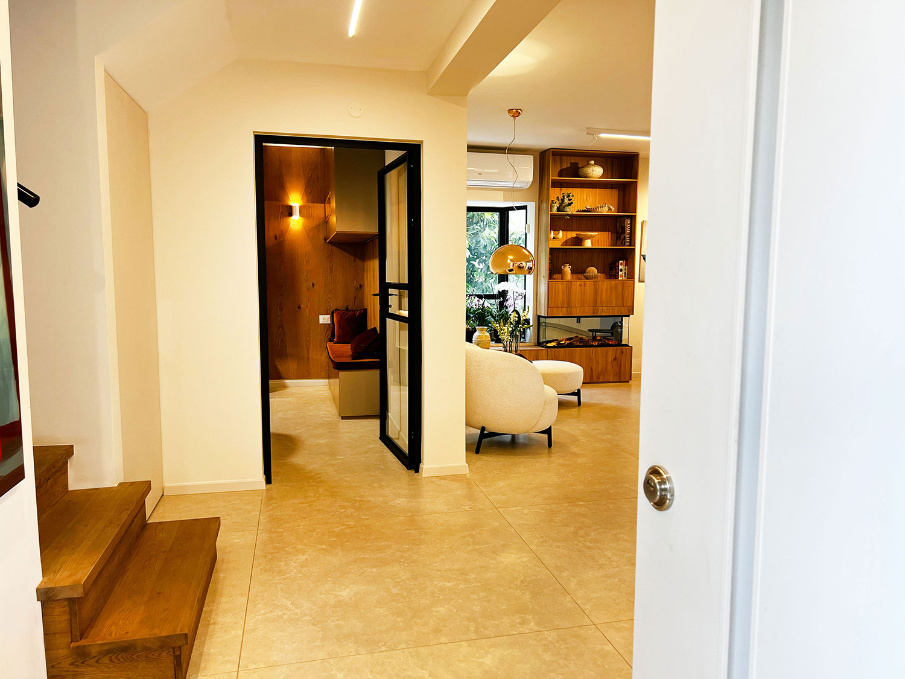

לא להעמיס. לתת לבית לדבר.
בפרויקט הזה היה חשוב ליצור עמוד קצר שמציג את התוצאה בלי לעייף: כמה תמונות חזקות, תחושה ברורה של הבית וקישור למי שרוצה להעמיק בתהליך המלא.
הבית נמצא ביבנה, באזור של בתים פרטיים, ולכן התכנון לא נעצר רק בפנים. החצר, הכניסה, האור, המטבח והסלון עובדים יחד ויוצרים בית שמרגיש פתוח יותר, מסודר יותר ונכון יותר לחיים של המשפחה.
פנים וחוץ
חיבור בין החלל המרכזי, היציאה החוצה והחצר, כדי שהבית לא ירגיש סגור בתוך עצמו.
מטבח וסלון
מטבח חדש, סלון פתוח, קמין וספרייה שמייצרים מרכז בית חם, שימושי ונעים.
תהליך מלא
בעמוד הארוך מחכה כל התהליך: לפני ואחרי, החלטות תכנוניות, תמונות רבות והסברים.
כמה רגעים שמספיקים כדי להבין את השינוי



לראות את הבית בתנועה
הסרטון נותן הצצה מהירה לאווירה של הבית ולשינוי שנוצר בין החללים, החומרים והתנועה בבית.
מהעמוד הקצר לתהליך המלא
העמוד הזה נותן טעימה מהפרויקט. מי שרוצה להבין את עומק העבודה, לראות עוד תמונות לפני ואחרי ולהכיר את ההחלטות שנעשו לאורך הדרך, יכול להמשיך לעמוד המלא.